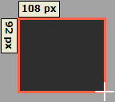

Table Of Contents
- Application Editor
- BusinessTimeSpan Editor
- Composer Theme Editor
- Credentials Manager
- License Status Manager
- LocalMachineInfo Editor
- Log Viewer
- Messaging Console
- Schedule Editor
- Screen Capture Util
- Server Extensions Configurator
- Task Tray Tool
- ToolPreferences Editor
- Workflow Explorer
Start > Programs > Symantec > Workflow Designer > Tools > Screen Capture Utility
You can capture and edit screen shots for use in your workflows or anywhere that you need a screen shot using the Screen Capture utility. Screen shots are saved in the .PNG format. After you capture a screen shot, you can crop, draw boxes, and even add notes.
You can also paste graphic files into the Screen Capture utility so they can be added to your workflows.
Chapter 38 pg610 - User Guide
Symantec Glossary
Screen Capture Util
[No Item Found]
Descriptionhttps://www.symantec.com/security_response/glossary/define.jsp
File Location
"[Install Drive]:\Program Files\Symantec\Workflow\Tools\ScreenCapture\LogicBase.ScreenCaptureUtil.exe"
Screenshots
Click on the Capture Region button
You will then be prompted with the following message.
Click and Drag

There are a number of buttons at the bottom right of the Utility.
Pan Image
Add Note
Draw Rectangle
Crop Image
If you click on "Add Note" there are a number of additional options.
- Change Font Color
- Change Font
- Change Fill Color
- Change Border Color
- Change Border Width
Set what you want, then drag on the screen and fill in your text.
If you want to capture the full screen click on "Capture Screen"
Capture Delayed
You will then have the option to choose how long to delay for.
Open File
Which will show an Open File Dialog where you can choose an image.
Copy To Clipboard
Save to File
Which will show an Save As File Dialog where you can choose a name for your image.
Close
Minimize
You can move around the image with Top, Right, Bottom, Left arrows
There is also Undo and Redo
Help
About the Screen Capture utility
https://support.symantec.com/en_US/article.HOWTO62360.html
About installing the Screen Capture utility
https://support.symantec.com/en_US/article.HOWTO46483.html
Install Command
"LogicBase.ScreenCaptureUtil.Short.exe" /S /NOSHORTCUTS=0 /D="C:\Program Files\Altiris\LogicBase ScreenCapture"